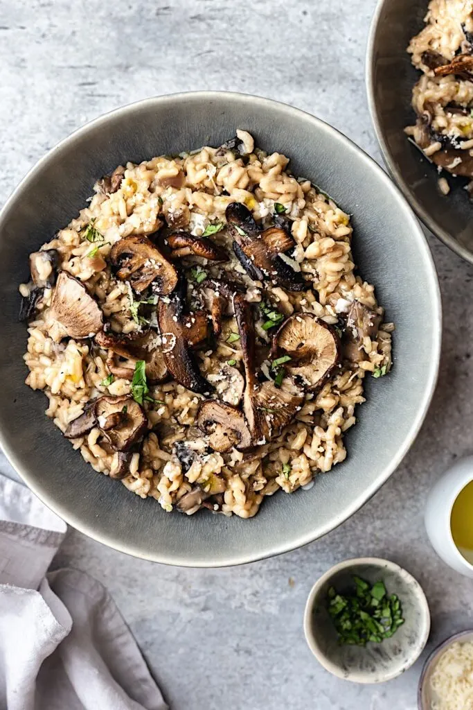

Mushroom Risotto

A great comfort meal
Ingredients
- Olive oil
- 2 garlic cloves
- 1 medium sweet onion diced
- 1 pound mushrooms of your choice diced
- 1 cup arborio rice
- 1 cup of white wine
- 6 cups of hot stock (veggie or chicken)
- 3 tbsp butter
- 1 cup of shredded parmesan chees + more for garnish
- 1 cup shredded spinach
Steps
- Heat the olive oil in a large cast iron pot
- Add the garlic and cook until fragrant
- Add the onion and mushroom and cook until soft and tender
- Add the dry rice to the onions and musrooms and stir until it is evenly distributed
- Add the white wine and stir until it is all covered and absorbed
- Now start to add the hot stock 1/2 a cup at a time
- Continually stir as you add the stock 1/2 cup at a time as it gets abrorbed
- Stir in the butter, cheese and shredded spinach until butter and cheese are absorbed
- Serve hot with cheese on top